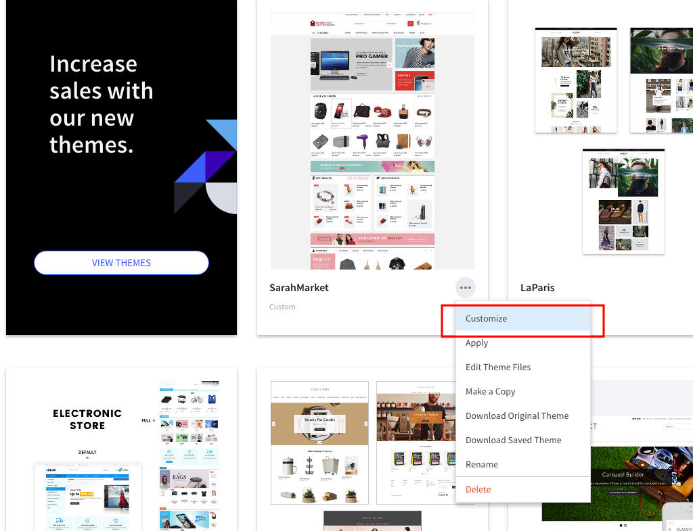

Upgrade Theme¶
This instruction below will help you upgrade the theme to the latest version.
Step 1: Install the upgraded theme package like the new theme. See instruction for installing theme here. But DON'T active the the updraded theme yet.
Step 2: Re-configure all theme settings in the Theme Editor for the new theme by click on button Customize in the thumbnail of the new upgraded theme:

Step 3: Copy content of all files you've edited from to old version to the new version by editing the files in Edit Theme Files editor. See how to edit template files. Files are often edited for customization are:
- lang/en.json
- assets/scss/_theme-custom.scss
- templates/pages/home.html
Step 4: Activate the upgrade theme. If you see any error you can revert back to the old version by activating the old theme.